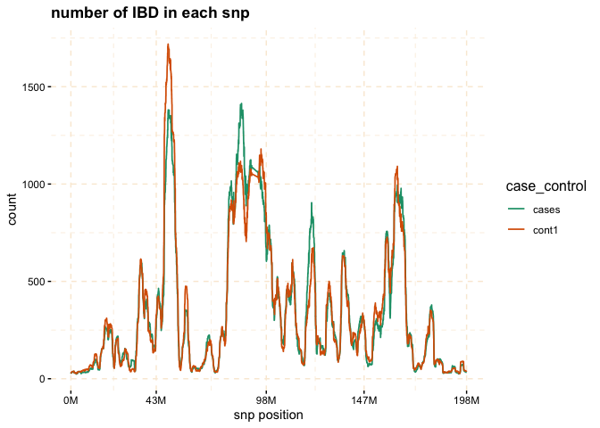
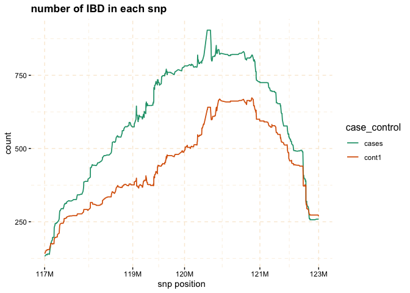
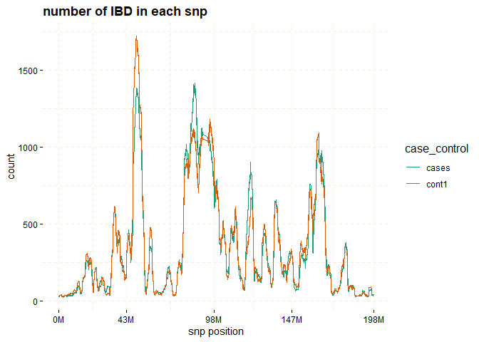
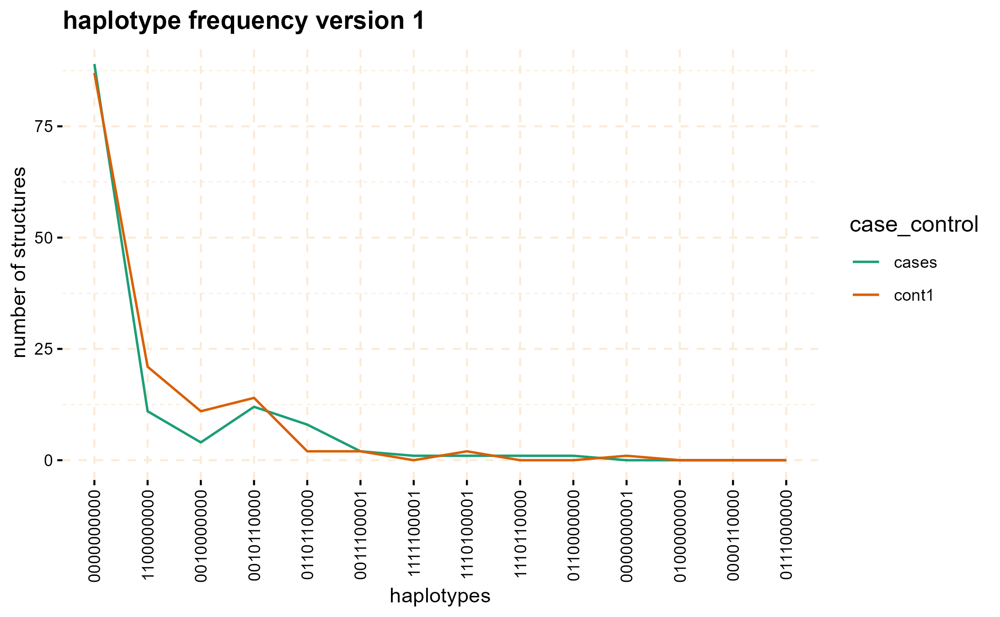

gwid is an R-package designed for the analysis of IBD (Identity by Descent) data, to discover rare alleles (susceptibility regions) associated with case-control phenotype. Although Genome Wide Association Studies (GWAS) successfully reveal numerous common variants linked to diseases, they exhibit lack of power to identify rare alleles. To address this limitation, we have developed a pipeline that employs IBD data (output of refined-IBD software). This methodology encompasses a sequential process for analyzing the aforementioned data within isolated populations. The primary objective of this approach is to enhance the sensitivity of variant detection by utilizing information from genetically related individuals, thereby facilitating the identification of causal variants. An overall representation of the pipeline is visually depicted in the following figure.
gwid pipeline
Usage
The gwid package receives four types of inputs: a genotype file, an IBD file, a haplotype file, and phenotype file. The genotype data is derived from the output of the SNPRelate package in the form of a gds file. The IBD file takes the form of tabulated data produced by the Refined IBD software. Haplotype file comes from the output of the Beagle, while phenotype data is represented using an R list.
Installation
You can install the stable version of gwid from CRAN with:
install.packages("gwid")Also, you can install the development version of gwid from GitHub with:
# install.packages("devtools")
devtools::install_github("soroushmdg/gwid")Example
We demonstrated the key functionalities of gwid using the rheumatoid arthritis (RA) GWAS dataset. This dataset consisted of DNA samples collected from 478 individuals diagnosed with rheumatoid arthritis (RA) and a control group of 1,434 individuals without RA. Genotyping was performed using the Illumina Infinium array. All samples were obtained from a genetically homogeneous population in central Wisconsin exhibiting elevated relatedness structure. Because size of data is large, we use pggyback package to upload and download data from github repository.
# install.packages("piggyback")
piggyback::pb_download(repo = "soroushmdg/gwid",
tag = "v0.0.1",
dest = tempdir())
ibd_data_file <- paste0(tempdir(),"//chr3.ibd")
genome_data_file <- paste0(tempdir(),"//chr3.gds")
phase_data_file <- paste0(tempdir(),"//chr3.vcf")
case_control_data_file <- paste0(tempdir(),"//case-cont-RA.withmap.Rda")Input
In this code we explain each input data files individually. case_control is object of class caco that has phenotype information. snp_data_gds object of class gwas read output of SNPRelate package, we use this package because it is very fast and efficient. haplotype_data object of class phase has haplotype data. ibd_data is an object of gwid class that has IBD information.
library(gwid)
#>
#> Attaching package: 'gwid'
#> The following objects are masked from 'package:base':
#>
#> print, subset
# case-control data
case_control <- gwid::case_control(case_control_rda = case_control_data_file)
names(case_control) # cases and controls group
#> [1] "cases" "case1" "case2" "cont1" "cont2" "cont3"
summary(case_control) # in here, we only consider cases,cont1,cont2,cont3
#> Length Class Mode
#> cases 478 -none- character
#> case1 178 -none- character
#> case2 300 -none- character
#> cont1 477 -none- character
#> cont2 478 -none- character
#> cont3 478 -none- character
# groups in the study
case_control$cases[1:3] # first three subject names of cases group
#> [1] "MC.154405@1075678440" "MC.154595@1075642175" "MC.154701@1076254706"
# read SNP data (use SNPRelate to convert it to gds) and count number of
# minor alleles
snp_data_gds <- gwid::build_gwas(gds_data = genome_data_file,
caco = case_control,
gwas_generator = TRUE)
class(snp_data_gds)
#> [1] "gwas"
names(snp_data_gds)
#> [1] "smp.id" "snp.id" "snp.pos" "smp.indx" "smp.snp" "caco" "snps"
# it has information about counts of minor alleles in each location.
head(snp_data_gds$snps)
#> snp_pos case_control value
#> 1: 66894 cases 627
#> 2: 66894 case1 240
#> 3: 66894 case2 387
#> 4: 66894 cont1 639
#> 5: 66894 cont2 647
#> 6: 66894 cont3 646
# read haplotype data (output of beagle)
haplotype_data <- gwid::build_phase(phased_vcf = phase_data_file,
caco = case_control)
class(haplotype_data)
#> [1] "phase"
names(haplotype_data)
#> [1] "Hap.1" "Hap.2"
dim(haplotype_data$Hap.1) # 22302 SNP and 1911 subjects
#> [1] 22302 1911
# read IBD data (output of Refined-IBD)
ibd_data <- gwid::build_gwid(ibd_data = ibd_data_file,
gwas = snp_data_gds)
class(ibd_data)
#> [1] "gwid"
ibd_data$ibd # refined IBD output
#> V1 V2 V3 V4 V5 V6
#> 1: MC.AMD127769@0123889787 2 MC.160821@1075679055 1 3 32933295
#> 2: MC.AMD127769@0123889787 1 MC.AMD107154@0123908746 1 3 29995340
#> 3: MC.AMD127769@0123889787 2 9474283-1-0238040187 1 3 34165785
#> 4: MC.AMD127769@0123889787 1 MC.159487@1075679208 2 3 21526766
#> 5: MC.163045@1082086165 2 MC.160470@1075679095 1 3 11822616
#> ---
#> 377560: 1492602-1-0238095971 2 2235472-1-0238095471 2 3 194785443
#> 377561: 4618455-1-0238095900 2 3848034-1-0238094219 1 3 190235788
#> 377562: MC.160332@1075641581 2 9630188-1-0238038787 2 3 184005719
#> 377563: MC.AMD122238@0124011436 2 MC.159900@1076254946 1 3 181482803
#> 377564: MC.AMD105910@0123907456 1 7542312-1-0238039298 1 3 182440135
#> V7 V8 V9
#> 1: 34817627 3.26 1.884
#> 2: 31752607 4.35 1.757
#> 3: 35898774 6.36 1.733
#> 4: 23162240 8.71 1.635
#> 5: 13523010 5.29 1.700
#> ---
#> 377560: 196328849 4.92 1.543
#> 377561: 192423862 7.77 2.188
#> 377562: 186184328 5.95 2.179
#> 377563: 184801115 3.58 3.318
#> 377564: 183972729 3.03 1.533
ibd_data$res # count number of IBD for each SNP location
#> snp_pos case_control value
#> 1: 66894 cases 27
#> 2: 82010 cases 28
#> 3: 89511 cases 29
#> 4: 104972 cases 29
#> 5: 107776 cases 29
#> ---
#> 133808: 197687252 cont3 44
#> 133809: 197701913 cont3 44
#> 133810: 197744198 cont3 44
#> 133811: 197762623 cont3 44
#> 133812: 197833758 cont3 44
plot method
The plot function can be applied to the gwid class to display the counts of IBD in each Single SNP among both case and control groups. By utilizing the ly=TRUE parameter, the user has the option to transform the plot into a plotly object, facilitating interactive exploration of the entire chromosome or specific regions of interest through the use of snp_start and snp_end parameters. Additionally, the y parameter enables the inclusion of only specific groups of subjects for consideration.

# Further investigate location between 117M and 122M
# significant number of IBD's in group cases, compare to cont1, cont2 and cont3.
plot(ibd_data,
y = c("cases","cont1"),
snp_start = 117026294,
snp_end = 122613594,
ly = FALSE) 
Through the utilization of the fisher_test method, it becomes possible to calculate p-values within chosen regions. These p-values help assess whether there are noteworthy differences in counts between the case and control groups.
model_fisher <- gwid::fisher_test(ibd_data,case_control,
reference = "cases",
snp_start = 117026294,
snp_end = 122613594)
class(model_fisher)
#> [1] "test_snps" "data.table" "data.frame"
plot(model_fisher,
y = c("cases","cont1"),
ly = FALSE)
You can perform permutation test as follows:
model_permutation <- gwid::permutation_test(ibd_data,gwas = snp_data_gds,
reference = "cases",
snp_start = 117026294,
snp_end = 122613594,
nperm = 10000)
plot(model_permutation)The haplotype_structure method can be utilized to extract haplotypes from regions that exhibit IBD patterns in a sliding window manner. w is length of sliding window and
hap_str <- gwid::haplotype_structure(ibd_data,
phase = haplotype_data,
w = 10,
snp_start = 117026294,snp_end = 122613594)
class(hap_str)
#> [1] "haplotype_structure" "data.table" "data.frame"
hap_str[sample(1:nrow(hap_str),size = 5),] # structures column have haplotype of length w=10
#> case_control snp_pos window_number smp structures
#> 1: cont2 121315813 531 8698972-1-0238040711 0010010000
#> 2: case2 121663962 615 MC.159618@1075678747 0100000000
#> 3: cases 119438608 316 MC.AMD103791@0124011227 0000000000
#> 4: cases 119133106 244 MC.AMD114019@0124011012 0000000000
#> 5: cont3 121155122 488 MC.158563@1075641406 0110000000The haplotype_frequency method can be employed to extract the count of these structures, which can then be plotted for each window.
haplo_freq <- gwid::haplotype_frequency(hap_str)
# plot haplotype counts in first window (nwin=1).
plot(haplo_freq,
y = c("cases", "cont1"),
plot_type = "haplotype_structure_frequency",
nwin = 1, type = "version1",
ly = FALSE
)